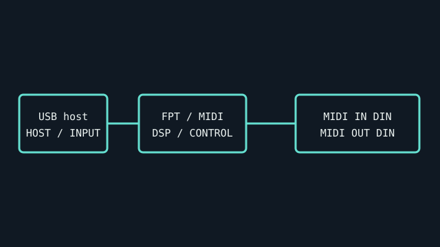

[ INDIVIDUAL COMPONENT // SOUND HARDWARE ]
Roland UM-ONE mk2
A compact USB MIDI interface with one MIDI input and one MIDI output. It transfers MIDI data only and does not provide audio conversion.

IDENTIFICATION: Match the complete printed model, revision, bundled breakout, and accessory markings. Specs below describe this named model; family-level variants are not assumed interchangeable.
Specifications
| Catalog subcategory | MIDI interfaces |
|---|---|
| Product ID | Roland UM-ONE mk2 USB MIDI interface |
| Bus / host | USB bus-powered device with an integrated USB cable and MIDI leads. |
| Connectors and I/O | One 5-pin DIN MIDI IN and one 5-pin DIN MIDI OUT; separate USB connection to the host. Data LEDs indicate MIDI activity. |
| Chipset / conversion / protocol | No audio ADC/DAC; protocol interface for MIDI data, with Roland FPT processing for low-latency/tight timing. |
| Drivers / operating systems | Roland lists Windows and Mac compatibility and supports iPad via Apple Camera Connection Kit. Windows support can require a Roland driver; confirm the UM-ONE mk2 support page and current OS package. |
| Variant compatibility | UM-ONE mk2 is distinct from original UM-ONE and UM-ONE mk2 switches/driver mode. Observe IN/OUT labels on the MIDI leads (connect synth OUT to interface IN). iPad use requires suitable camera adapter and power configuration. |
Service & preservation
Preserve the permanently attached cables and label host/MIDI directions. Inspect leads for strain and test data flow in both directions independently. Save the system driver mode and OS version; avoid bending the cable at the molded USB end.
Identification and compatibility checks
- Photograph the product/model label, board silkscreen/revision, connector faces, cable assemblies, and accessory part numbers before installation.
- Check electrical bus and host slot or USB/MIDI protocol support against the exact manual; connector shape alone does not establish compatibility.
- For analog I/O, confirm line/mic/instrument level, phantom-power behavior, channel map, and direction from the model-specific documentation before connecting equipment.
- When software or driver support is uncertain, preserve the last known-good installer and document tested host OS, driver version, and device identifier.
Primary manufacturer & standards sources
- Roland UM-ONE mk2 official product pageManufacturer confirms 1-in/1-out, FPT, USB bus power and Mac/Windows/iPad compatibility.
- Roland UM-ONE mk2 Owner’s ManualModel-specific manual for cable direction, driver mode, and host connection.
- Roland UM-ONE mk2 driver downloadsOfficial OS-specific driver archive.
Source selection is model-specific where an original manual or vendor product/support page exists. Archived scans preserve manufacturer documentation; operating-system claims are limited to what the cited product/manual materials identify.